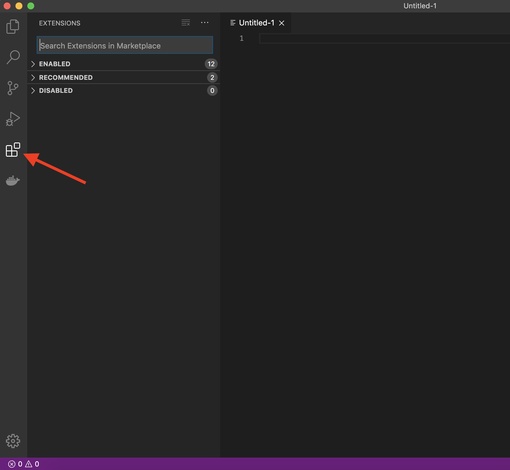

Installation instruction for Windows#
Attribution
This installation guide was adapted from the UBC MDS installation guide
Installation notes#
In all the sections below, if you are presented with the choice to download either a 64-bit (also called x64) or a 32-bit (also called x86) version of the application always choose the 64-bit version.
Visual Studio Code#
The open-source text editor Visual Studio Code (VS Code) is both a powerful text editor and a full-blown Python IDE, which we will use for more complex analysis. Go to https://code.visualstudio.com/download and download the windows version of VS Code. After the download has finished, run the installer and accept the default configuration for all pages except for the following:
Optional On the Select Additional Tasks page, check “Create a desktop icon” under “Additional icons”.
Also on the Select Additional Tasks page check all four boxes under “Other”
“Add ‘Open with Code’ action to Windows file context menu”
“Add ‘Open with Code’ action to Windows directory context menu”
“Register Code as an editor for supported file types”
“Add to PATH” (this should be selected by default).

GitHub#
GitHub.com#
Sign up for a free account at GitHub.com if you don’t have one already.
Git, Bash, and Windows Terminal#
Although these three are separate programs, we are including them in the same section here since they are related and used together on Windows. Briefly, we will be using the Bash shell to interact with our computers via a command line interface, Git to keep a version history of our files and upload to/download from to GitHub, and Windows Terminal to run the both Bash and Git.
Go to https://git-scm.com/download/win and download the windows version of git (this installer also includes Bash and we will refer to it as Git Bash). After the download has finished, run the installer and accept the default configuration for all pages except for the following:
On the Select Components page, add a Git Bash profile to Windows Terminal.
On the Choosing the default editor used by Git page, select “Use Visual Studio Code as Git’s default editor” from the drop-down menu’
You should already have VS Code installed from an earlier installation step
Set the default branch name to
main
For the remainder screens, pick the default selected options:
Adjusting your PATH environment: Git from the command line and also from 3rd-party software
Choosing the SSH executable: Use bundled OpenSSH
Choosing HTTPS transport backend: Use the OpenSSL library
Configuring the line ending conversions: Checkout Windows-style, commit Unix-style line endings
Configuring the terminal emulator to use with Git Bash: Use MinTTY (the default terminal of MSYS2)
Choose the default behavior of ‘git pull’: Fast-forward or merge
Choose a credential helper: Git Credential Manager
Configuring extra options: Enable file system caching
You can also choose to “Enable symbolic links”
Configuring experimental options: leave it unchecked
To install windows terminal visit this link
and click Get to open it in Windows Store.
Inside the Store, click
Getagain and then clickInstall.After installation, click
Launchto start Windows Terminal.In the top of the window, you will see the tab bar with one open tab, a plus sign, and a down arrow.
Click the down arrow and select
Settings(or type the shortcutCtrl+,).In the
Startupsection, click the dropdown menu underDefault profileand selectGit Bash.

You can now launch the Windows terminal from the start menu
or pin it to the taskbar like any other program
(you can read the rest of the article linked above for additional tips if you wish).
To make sure everything worked,
close down Windows Terminal,
and open it again.
Git Bash should open by default,
the text should be green and purple,
and the tab should read MINGW64:/c/Users/$USERNAME
(you should also see /c/Users/$USERNAME if you type pwd into the terminal).
This screenshot shows what it should look like:

Note: Whenever we refer to “the terminal” in these installation instructions, we want you to use the Windows Terminal that you just installed with the Git Bash profile. Do not use Windows PowerShell, CMD, or anything else unless explicitly instructed to do so.
To open a new tab you can click the plus sign or use Ctrl + Shift + t
(you can close a tab with Ctrl + Shift + w).
To copy text from the terminal,
you can highlight it with the mouse and then click Ctrl + Shift + c.
To paste text you use Ctrl + Shift + v,
try it by pasting the following into the terminal
to check which version of Bash you just installed:
bash --version
The output should look similar to this:
GNU bash, version 5.2.15(1)-release (x86_64-pc-msys)
Copyright (C) 2020 Free Software Foundation, Inc.
License GPLv3+: GNU GPL version 3 or later <http://gnu.org/licenses/gpl.html>
This is free software; you are free to change and redistribute it.
There is NO WARRANTY, to the extent permitted by law.
Note: If there is a newline (the
entercharacter) in the clipboard when you are pasting into the terminal, you will be asked if you are sure you want to paste since this newline will act as if you pressedenterand run the command. As a guideline you can pressPaste anywayunless you are sure you don’t want this to happen.
Let’s also check which version of git was installed:
git --version
git version 2.42.0.windows.2
Note: You can launch many windows programs from the terminal, e.g. to launch VS Code that we installed previously, you would type in
code, let’s use this to check the version of vscode that we installed:
code --version
1.81.1
6d9b74a70ca9c7733b29f0456fd8195364076dda
x64
Configuring Git user info#
Next, we need to configure Git by telling it your name and email. To do this type the following into the terminal (replacing Jane Doe and janedoe@example.com, with your name and email (the same used to sign up for GitHub), respectively):
git config --global user.name "Jane Doe"
git config --global user.email janedoe@example.com
Note: to ensure that you haven’t made a typo in any of the above, you can view your global Git configurations by either opening the configuration file in a text editor (e.g. via the command
code ~/.gitconfig) or by typinggit config --list --global.
Setting VS Code as the default editor#
To make programs run from the terminal (such as git) use VS Code by default, we will modify ~/.bash_profile. First, open it using VS Code:
code ~/.bash_profile
Note: If you see any existing lines in your
~/.bash_profilerelated to a previous Python or R installation, please remove these.
Append the following lines:
# Set the default editor for programs launch from terminal
EDITOR="code --wait"
VISUAL=$EDITOR # Use the same value as for "EDITOR" in the line above
Then save the file and exit VS Code.
Note: Most terminal programs will read the
EDITORenvironmental variable when determining which editor to use, but some readVISUAL, so we’re setting both to the same value.
In some cases, VScode is not set as the default text editor for git even after appending the two lines above, so to make sure it is registered properly, also run the following from your terminal:
git config --global core.editor "code --wait"
On Windows,
VScode sometimes reads a different configuration file than Git Bash.
To avoid this,
open your ~/.bashrc file:
code ~/.bashrc
And append the following lines:
# Do NOT add anything to this file, use `~/.bash_profile` instead.
# The next line automatically loads your `~/.bash_profile`
# any time a program tries to read your `~/.bashrc` file.
if [ -f ~/.bash_profile ]; then . ~/.bash_profile; fi
The comment is a reminder to your future self who might open up this file a few months from now =)
Setting Git Bash as the default VS Code terminal profile#
Finally, let’s make sure the VS Code uses our newly installed Git Bash shell as its default terminal profile:
Open Up VS Code and go to the general preferences / settings (shortcut
Ctrl+,).Type in “Default terminal profile” and find the entry that reads
Terminal > Integrated > Default profile: Windows.Select Git Bash from the drop down menu of this entry.
Now Git Bash should be opened automatically each time you open a new terminal in side VS Code.
Python, Conda, and JupyterLab#
Python and Conda#
We will be using Python for a large part of the program, and conda as our Python package manager. To install Python and the conda package manager, we will use the Miniforge platform (read more here).
Select the appropriate link:
You can find the Windows download links here: https://conda-forge.org/miniforge/.
Make sure you use the Miniforge3 installers, not the other ones listed.
We will assume you downloaded the file into your Downloads folder.
Once downloaded, run the installer.
Use all the default options in the installer.
The install location should look something like: C:\Users\YOUR_USER_NAME\miniforge3
Note: Do not add miniforge to PATH. We will set this up later.
After installation, open the Start Menu and search for the program called “Miniforge Prompt”. When this opens you will see a prompt similar to (base) C:\Users\your_name. Type the following to check that your Python installation is working:
python --version
which should return Python 3.11.0 or greater:
Python 3.11.0
If not, run the following command in the Miniforge Prompt,
Confirm that you are in the (base) environment.
Then update the base python with:
conda install python=3.11
Integrating Python with the Git Bash terminal#
To avoid having to open the separate Anaconda Prompt every time we want to use Python, we can make it available from the (Git Bash) terminal, which is what we will be using most of the time. To set this up, open the “Miniforge Prompt” again and type:
conda init bash
You will see that this modified a few configuration files, which makes conda visible to the terminal. Close all open terminal windows and launch a new one, you should now see that the prompt string has changed to include the word (base) as in the screenshot below:

If you type
python --version
you should now see the same output as above:
Python 3.11.0
Let’s also check the version of the conda package manager. If you type
conda --version
you should see something like this
conda 23.5.2
Optional: One annoyance with our current terminal setup is that the word
(base)is not on the same row as the rest of the prompt string (the part withyour_name@your_computer. To fix this we can edit the.bash_profileconfiguration file to indicate that we do not want a newline at the beginning of the prompt string. Open up the configuration file using VS Code by typing the following command into a terminal:code "/c/Program Files/Git/etc/profile.d/git-prompt.sh"Delete the line that reads the following (it should be line 13):
PS1="$PS1"'\n' # new lineWhile we are in this file, let’s also remove the line that says
PS1="$PS1"'$MSYSTEM ' # show MSYSTEM(now should be line 16), to remove some clutter from the terminal.Click to save the file, when VS Code prompts you that the saving failed, click “Retry as Admin” and then “Yes”. That’s it! Now if you launch a new terminal instance, you will see
(base)on the same line as the rest of the prompt string as in the screenshot below.

Installing Python packages#
conda installs Python packages from different online repositories which are called “channels”.
A package needs to go through thorough testing before it is included in the default channel,
which is good for stability,
but also means that new versions will be delayed and fewer packages are available overall.
There is a community-driven effort called the conda-forge (read more here),
which provides more up to date packages.
Conda-forge is already set up when we installed Miniforge3
To install packages individually,
we can now use the following command:
conda install <package-name>.
After running that command
conda will show you the packages that will be downloaded,
and you can press enter to proceed with the installation.
If you want to answer yes by default and skip this confirmation step,
you can replace conda install with conda install -y.
Also note that we may occasionally need to install packages using pip, the standard Python package manager. The installation command is very similar to that of conda: pip install <package-name>.
In the next session
we will use conda to install
some of the key packages we will use.
JupyterLab setup#
We will be using JupyterLab as our main coding environment
and pandas is one of the key data analyses packages.
The Jupytext Python package and the JupyterLab git extension facilitates
using notebooks in JupyterLab together with Git & GitHub.
The spellchecker helps us correcting typos in our writing
and the LSP packages fill the same function for our code.
Install them via the following commands:
conda install pandas jupyterlab=4 jupyterlab-git jupyterlab-spellchecker jupytext
If the above command fails, try installing a few packages at a time instead of all of them at once.
We will grade part of your assignments using the Otter-Grader package. For your Jupyter-based assignments, you need to install Otter-Grader using the following command:
pip install otter-grader
To test that your JupyterLab installation is functional, you can type jupyter lab into a terminal,
which should open a new tab in your default browser with the JupyterLab interface.
To exit out of JupyterLab you can click File -> Shutdown,
or go to the terminal from which you launched JupyterLab and hold Ctrl while pressing c twice.
VS Code extensions#
The real magic of VS Code is in the extensions that let you add languages, debuggers, and tools to your installation to support your specific workflow. From within VS Code you can open up the Extension Marketplace to browse and install extensions by clicking on the Extensions icon in the Activity Bar indicated in the figure below.

To install an extension, you simply search for it in the search bar, click the extension you want, and then click “Install”. There are extensions available to make almost any workflow or task you are interested in more efficient! Here we are interested in setting up VS Code as a Python IDE. To do this, search for and install the following extensions:
Python (everything Python: notebooks, debugging, linting, formatting, etc.)
markdownlint (markdown linting and style checking extension)
GitLens (powerful extension that extends VS Code’s native git capabilities)
Git History (intutive view of your git history)
(Optional) Material Theme and/or Predawn Theme Kit (additional colour themes to choose from)
(Optional) Material Icon Theme (great-looking custom file icons!)
This video tutorial is an excellent introduction to using VS Code in Python.